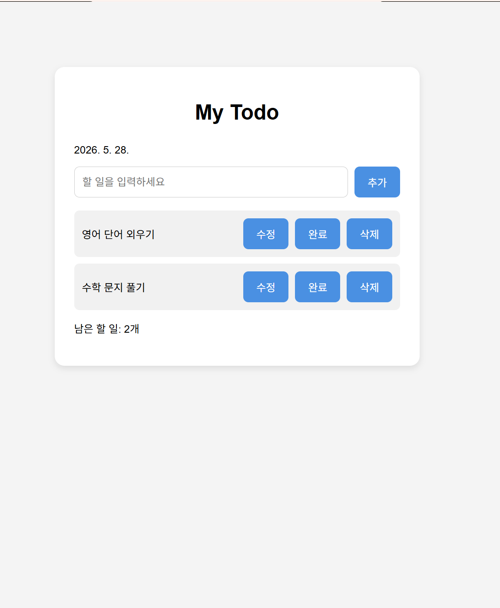
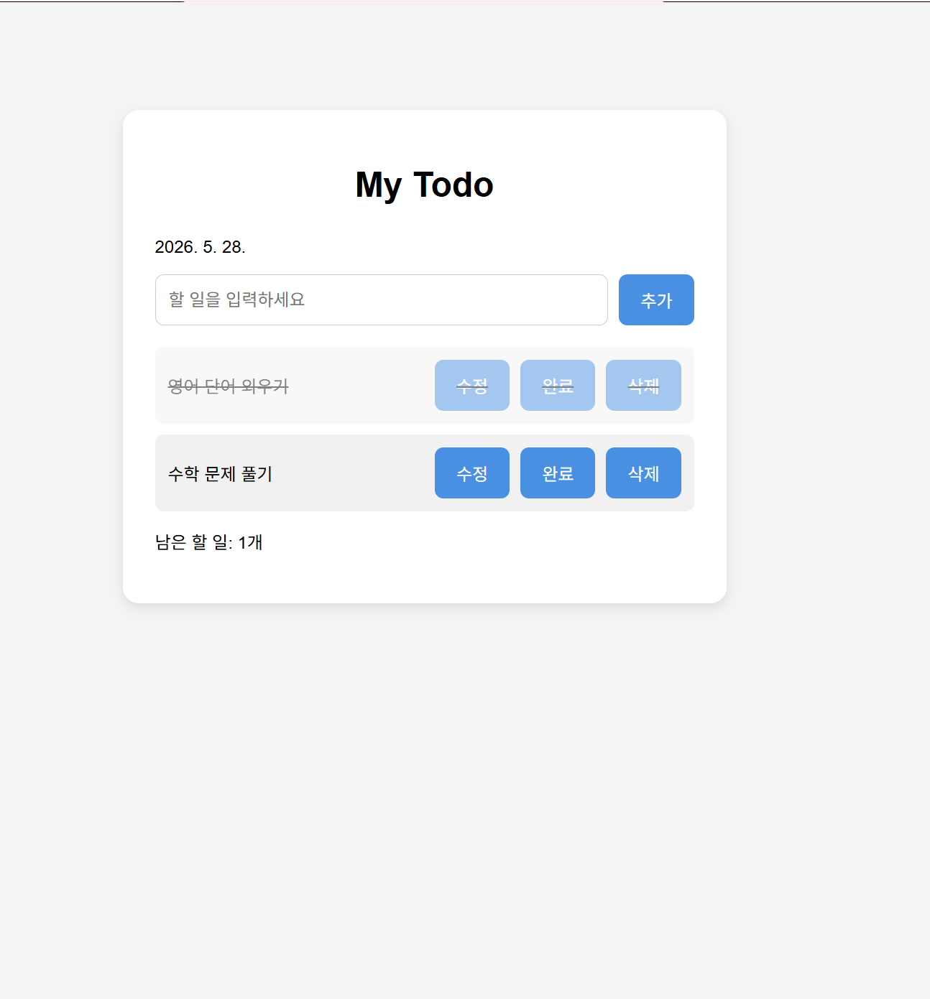

프로젝트


My Todo 웹 애플리케이션
바닐라 자바스크립트로 구현한 나만의 할 일 관리(Todo) 프로그램입니다. '2026. 5. 28.'과 같이 오늘 날짜가 화면 상단에 자동으로 표시되는 기능을 구현했습니다. 사용자가 입력창에 할 일을 적고 우측의 '추가' 버튼을 누르거나 키보드의 엔터키를 입력하면 목록에 즉시 반영됩니다. 생성된 할 일 카드 내부에는 '수정', '완료', '삭제' 버튼을 각각 독립적인 기능으로 매핑하여 배치했습니다. '완료'를 누르면 항목 처리가 완료되고, '수정'으로 내용 변경이 가능하며, '삭제' 시 목록에서 즉시 제거됩니다. 각 버튼과 리스트 항목에 마우스를 올리면 커서가 손가락 모양(Pointer)으로 바뀌도록 스타일을 제어했으며, 최하단에는 현재 처리해야 할 '남은 할 일의 개수'가 실시간으로 계산되어 화면에 출력되는 상태 관리 기능을 갖추고 있습니다.

랜덤 고양이 이미지 사이트
바닐라 자바스크립트와 외부 API를 활용해 랜덤 고양이 이미지를 보여주는 웹사이트를 구현했습니다. 버튼을 클릭할 때마다 새로운 고양이 사진이 화면에 출력되며, 매번 다른 이미지가 랜덤으로 불러와집니다. API 호출과 비동기 처리를 직접 구현해보며 fetch 함수와 Promise의 동작 방식을 익혔습니다. 완성된 사이트는 Vercel을 통해 배포하여 실제 웹에서 동작하는 서비스로 만들어보는 경험을 할 수 있었습니다.